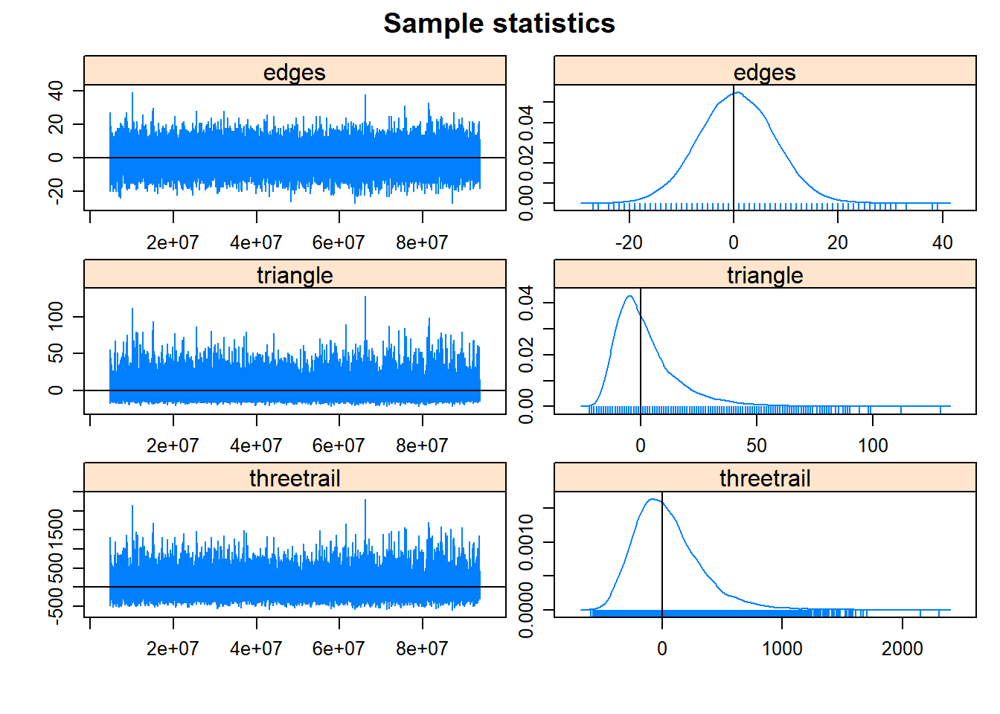
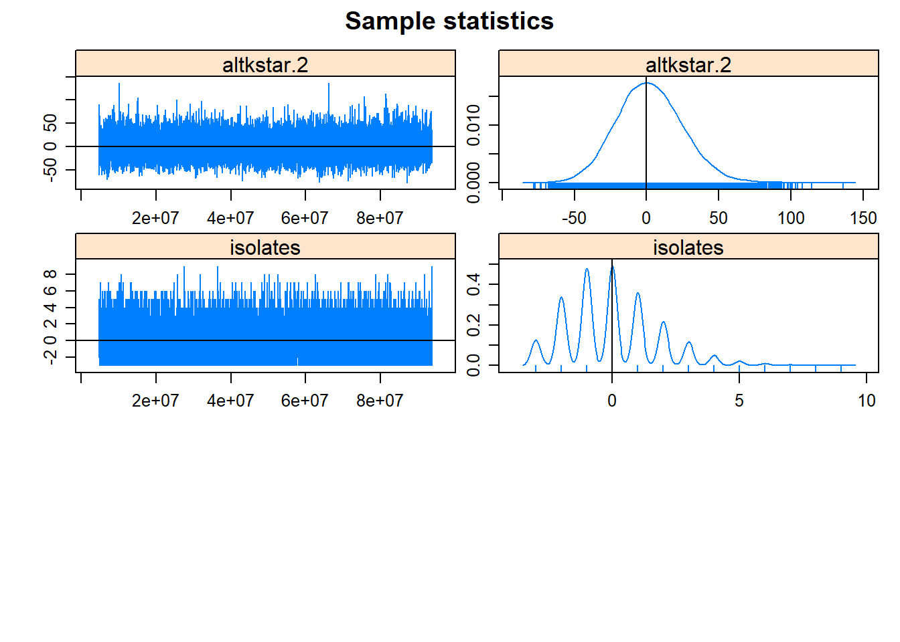

Section 8 Exponential Random Graph Models
Exponential Random Graph Models (ERGM; typically pronounced “UR-gum”) are a class of statistical models designed to help represent, evaluate, and simulate ideas about network generating processes and structural properties (for a good introductions to the method see Lusher et al. 2013; and for archaeological cases see Amati et al. 2020; Brughmans et al. 2014; Wang and Marwick 2021). These models allow us to formally represent our theories about how particular patterns of relationships (such as paths of a given length or triads of a specific configuration) or associations (such as mutuality or connections among nodes that share an attribute) emerge and persist in our networks. Further ERGMs help us evaluate how well such theories account for our observed network data. Specifically, an ERGM can be used to generate large numbers of networks in a random process targeted towards particular configurations and associations that represent our theories of interest. We can then compare those simulated networks to our observed network to generate perspectives on the plausibility of our theory. Essentially, ERGMs help us determine how the local tendencies in network formation generate the global properties and structures of our networks.
In many ways, ERGMs are similar to logistic regression models where we predict the presence or absence of ties between pairs of nodes with edge formation modeled as dependent on network structure and properties (e.g., density, transitivity, centralization, etc.). Such models help us assess the probability that the observed network is a product of specified properties or generative processes that may be more or less likely to occur than we would expect by chance in a random network.
The details of ERGMs and the underlying mathematics are beyond the scope of this document, but we present a brief overview of the highlights based heavily on a workshop on ERGM by the statnet team (Krivitsky et al. 2021). See that workshop for more details.
The general model form for an ERGM can be written as:
\[P(Y=y) = \frac{\text{exp}(\theta' g(y))}{k(\theta)}\]
where
- \(P(Y=y)\) is the probability that the network will take a given state \(y\) among random possibilities \(Y\).
- \(g(y)\) is the set of model ERGM terms considered. These are essential the covariates in the model.
- \(\theta\) is the set of coefficients for model terms.
- \(k(\theta)\) is a normalizing constant defined as numerator summed overall all possible networks constrained on the node set \(y\). In other words, all possible network configurations that could exist with the given node set.
The general form for an ERGM expressed in terms of the entire network as we see above can also be expressed in terms of the conditional log odds of an edge existing between any two nodes as follows:
\[\text{logit}(Y_{ij}=y_{ij}) = \theta'\delta(y_{ij})\]
where
- \(Y_{ij}\) is the random variable for the state of the edge (present or absent) for a given pair of nodes \(i\) and \(j\) and \(y_{ij}\) is the observed state.
- \(\delta (y_{ij})\) is the change statistic representing how \(g(y)\) (the state of the graph and associated terms) changes if the edge between \(i\) and \(j\) is active or not.
- \(\theta\) describes the contribution of a term to the log odds of an individual edge between \(i\) and \(j\) conditioned on the state of all other edges remaining the same (we explain this in more detail below with examples).
The coefficient estimates in ERGM models are returned in log odds which indicates the change in the likelihood of an edge per unit change in the given predictor (this is where the “change statistic”) comes in. For example a coefficient estimate \(\theta\) of 1.5 for a given term would indicate that the likelihood of an edge is 1.5 times higher for every change of that term by 1 unit. Conversely, an coefficient estimate for a term of -5.5 would suggest that the likelihood of an edge is 5.5 times less likely for every unit change of the term. In general, positive coefficients suggest that a given network feature denoted by the term is more common than we would expect by chance and a negative value suggests it is less common than we would expect by chance (given the constraints placed on network construction). The magnitude of the coefficients further provides an indication of how much more or fewer of a given features we see than we would expect. We explain how this works in more detail in the examples below.
The log odds is the logarithm of the odds ratio. The odds ratio refers to the probability that an event occurs divided by the probability that an event does not occur (1 minus the probability that it occurs). This can be written formally as:
\(\text{log}(A) = \frac{\text{log}(P(A)}{(1-P(A))}\)
where
- \(\text{log}(A)\) is the log odds of event A
- \(\text{log}(P(A)\) is the probability of event A occurring
- \(\text{log}(1-(P(A))\) is the probability of event A not occurring
Negative log odds values indicate that probability of an event occurring is < 0.5 and positive log odds values indicate that the probability of an event occurring is > 0.5. Log odds will be exactly 0 when the probability of an event occurring is 0.5.
8.1 ERGMs in R
In general, the analysis of ERGMs in R is conducted in three basic steps:
- First, we asses the general properties of interest in our network using exploratory network statistics described in the Exploratory Network Analysis section of this document.
- Next, we define our network terms of interest and fit one or more ERGMs to our observed network and assess the results.
- Finally, we assess the goodness of fit of our models and assess the diagnostic statistics for our model generating processes.
If all goes well in the steps above, we can then evaluate our network theory or property of interest in relation to the ERGM that we created.
The statnet suite of packages includes a package called
ergm that facilitates the analysis of ERGMs in R and an
additional package called tergm that provides terms and
methods for analyzing temporal networks using ERGMs. Networks need to be
in the network format to be analysed using the
statnet suite of packages.
Let’s initialize our statnet suite to get started:
In many ways it is easiest to describe what ERGMs do and how they work by example. In the next sections we provide a couple of archaeological examples that highlight some of the ways ERGMs have or could be used in archaeology. We further provide additional resources for taking these methods further.
8.2 Cranborne Chase Visibility Network Example
We start with an example that was described briefly in the Brughmans and Peeples (2022) book in Chapter 4, but not covered in detail. Specifically, we explore the potential generative processes involved in the development of the intervisibility network among long barrows in the Cranborne Chase area in southern England. As this example is only briefly described in the Brughmans and Peeples (2022) book, you may also want to read and follow along with the original article where that analyses first appeared (Brughmans and Brandes 2017).
Briefly, the network consists of a set of nodes which represent long barrows and edges among them which represent ground-truthed ties of intervisbility between pairs of barrows. The original data came from work by Chris Tilley (1994). These data were used by Brughmans and Brandes (2017) to formally test the notion put forth by Tilley that highly visible barrows “attracted” others over time. In network terms this could be characterized as a “preferential attachment” process. Brughmans and Brandes created an ERGM model with particular properties drawn from Tilley’s theoretical model of network development and found that networks simulated with those properties using ERGMs had substantially similar properties to the observed network. Based on this, they considered Tilley’s theoretical model plausible.

Photograph of a long barrow at Cranborne Chase. Original image by Jim Champion: CC 3.0
{kind=link}
The original ERGM analysis published by Brughmans and Brandes was conducted in a Java program designed for ERGM analysis called PNet. Here we replicate some of their results and a few additional analyses using slightly different methods and assumptions in R by way of demonstration. Our results differ slightly from the published results because of the randomness inherent in fitting ERGMs but all coefficient retain the same sign and magnitude suggesting a good replication of the most important results.
8.2.1 Assessments of Network Properties
Let’s start by bringing in our Cranborne Chase network data (as a network object) and looking at the general properties of the network object.
load("data/cranborne.Rdata")
cranborne## Network attributes:
## vertices = 32
## directed = FALSE
## hyper = FALSE
## loops = FALSE
## multiple = FALSE
## bipartite = FALSE
## total edges= 49
## missing edges= 0
## non-missing edges= 49
##
## Vertex attribute names:
## vertex.names
##
## No edge attributesThis network is an undirected, unweighted network object with 32 nodes and 46 edges. Let’s look at a few properties of the network including density, mean degree, degree centralization, and number of isolates.
sna::gden(cranborne) # density## [1] 0.09879032## [1] 6.125
sna::centralization(cranborne, g = 1, degree) # degree centralization## [1] 0.2043011## [1] 3This is a fairly sparse network with few isolates and a low degree centralization.
Let’s plot it with nodes scaled by degree:
This network has 3 components and a few isolates. In general many of the nodes have similar degree centrality values but there are a few nodes which appear to have higher degree. We can look at a histogram of degree centrality to further assess the distribution.
8.2.2 Fitting Models with ergm
Now that we’ve explored some of the basic properties of our network, the next step is to begin to fit ERGMs to our observed network. The first thing we are going to do is fit a very simple model with only one term. In the ergm package “terms” refer to the specific constraints placed on our randomly generated networks (see ?ergm.terms for a list of the many built-in terms). The most basic term that is included in many models is edges which simply refers to the number of edges in a network. An ERGM with a single edges term is conceptually equivalent to a typical GLM regression model where the only predictor is the intercept.
In the chunk of code below we see the form that ergm model objects take in R. Inside the ergm call we have our network on the left hand size cranborne followed by ~ and then followed by edges which is a built-in “term” in the ergm package. As we will see below, when we use multiple terms we separate them by a +. Once we have crated our ergm model object we then explore the output using the summary() function.
mod_null <- ergm(cranborne ~ edges)
summary(mod_null)## Call:
## ergm(formula = cranborne ~ edges)
##
## Maximum Likelihood Results:
##
## Estimate Std. Error MCMC % z value Pr(>|z|)
## edges -2.2107 0.1505 0 -14.69 <1e-04 ***
## ---
## Signif. codes: 0 '***' 0.001 '**' 0.01 '*' 0.05 '.' 0.1 ' ' 1
##
## Null Deviance: 687.6 on 496 degrees of freedom
## Residual Deviance: 319.8 on 495 degrees of freedom
##
## AIC: 321.8 BIC: 326 (Smaller is better. MC Std. Err. = 0)In the output above there are a number of important features that need explanation.
The summary output includes the call/model formula we used followed by the Maximum Likelihood Results. The output we will focus on here includes the estimates of each model term, the standard error of the estimates, and the p-value associated with that term:
- First, in the example here, we get an estimate of
edgesas-2.2107which is the conditional log odds of two nodes having an edge between them (explained further below) - Next, we have the standard error of the coefficient estimate.
- And we also have “Pr(>|z|) which is the p-value associated with a particular term. The p-value here is calculated as a function of the relative size of the coefficient estimate and the standard error.
What the estimate (and associated standard error and p-value) indicates is how much a change in the term by one unit changes the likelihood that a particular edge is present. In this case, a change by one unit in the term edges refers to the addition of exactly 1 edge to the network (\(\delta(g(y)) = 1\)) so the coefficient is an estimate of how much the addition of 1 edge to the network changes the likelihood of any particular edge:
\[\begin{aligned} \text{logit}(p(y)) & = \theta \times \delta(g(y))\\ & = -2.2107 \times \text{change in the number of edges}\\ & = -2.2107 \times 1\\ & = -2.2107 \end{aligned}\]
So in this example, the likelihood of an edge between two particular nodes is 2.2107 times less likely for every additional increase in the number of network by 1 edge in the network as a whole. So for every edge added the probability that a particular edge is present decreases. What this negative coefficient means is that an edge is more likely absent than present (and a positive coefficient would suggest the opposite) and thus, if we add an edge elsewhere in the network it is even less likely that our target edge will be active. We can calculate the probability of that an edge is present by taking the inverse logit of \(\theta\):
## [1] 0.09879373As we would expect, this number is very close to the density of the network which is what the edges term uses as a constraint (number of edges is a function of density):
sna::gden(cranborne)## [1] 0.09879032What this indicates is that if we are trying to predict a given network state (a given set of present an absent edges) and the only information we know is the network density, the probability that a particular edge is present is roughly equal to the network density. As the coefficient is statistically significant, this means that there is a low probability (p-value) of obtaining a model with no terms at random that provides as good or better predictions of the observed than the model including the edges term.
Finally we can see our model fit statistics at the bottom with AIC (Akaike Information Criterion) and BIC (Bayesian Information Criterion). These are both model fit statistics that can be used to compare competing models where lower values represent better fit between the model and the data. Further, the Null deviance is a measure of how well the network was predicted by a model with no covariates vs. the residual deviance which is a measure of how well the network is predicted by a model with the covariates. Residual deviance will be lower than Null deviance and bigger gap between the two is better. In general, the absolute values of these model fit terms do not matter but rather they provide a means for comparing multiple models for predicting the same observations as we will see below.
8.2.3 Building a Model Based on Theory
The simple example above built an ERGM predicated on nothing but network density using the edges term. As outlined by Brughmans and Brandes (2017) there are specific features of the Cranborne Chase network development process theorized by Tilley which could be converted into a formal ERGM model using specific ergm.terms. Specifically, Tilley suggested that long barrows tended to be clustered into groups and intervisibility was a primary concern for some, but not all long barrows. Further, he suggested that long barrows tended to be clustered in sets and include straight paths where multiple barrows were visible from a single point. Finally, Tilley suggested that barrows that were already highly visible tended to attract new visibility connections through time. To capture this theory of network development in formal terms, Brughmans and Brandes (2017) create a set of terms to match Tilley’s expectations. They include the following terms:
-
edges- the number of active edges: this term represents the tendency for long barrows to have visibility connections. -
triangle- the number of closed triangles: this term represents the clustering that Tilley expects in the network as networks with many closed triangles often have distinct clusters. -
threetrail- the number of paths or trails of 3 (threepathandthreetrailare used equivalently in theergmhere) in the network: this term is meant to capture Tilley’s visual pathways where multiple barrows are visible in a specific direction. -
altkstar- alternating stars: this term is used to represent certain nodes with high degree distribution representing the prominent nodes in the network generated through a process of preferential attachment. -
isolates- the number of isolates in the network: this term is here to capture the tendency for nodes to not be isolate as Tilley describes.
Here are visual representations of these network configurations from Brughmans and Brandes (2017):

Network terms included in ERGM
Brughmans and Brandes present two versions of the model in the article. The first excludes the isolates term and the second includes it. Let’s replicate their results here. Note that we are using different software and terms may be defined slightly differently so our results may differ a bit from their published results. Further, ERGMs include random simulation to two runs of the same model will not return the same results unless we supply a random seed. To do that in the ergm call we use a control argument as we see below.
Let’s first go over what it is to be included in the terms. We want to first create a model with the terms edges, triangle, threetrail, and altkstar. Most of the terms can be used without further arguments but the altkstar term needs an additional weight parameter lambda and for us to define that weight parameter as fixed (see term descriptions here for more details).
ERGMs can sometimes take quite a bit of time to run as they involve
generating lots of estimates of random variables using the MCMC process.
In order to control the behavior of the MCMC sampling process, we can
use the control argument within the ergm
function. In the examples here we have opted for a fairly large sample
size per chain and a relatively large interval between samples. As we
will see further below, this will help with our coefficient estimates
and model fit but the trade off is time. If you want to simply run the
models in the examples below quickly, you simply remove these three
arguements within the control.ergm function call:
MCMC.burnin, MCMC.interval, and
MCMC.samplesize.
Let’s fit the model and look at the summary. Note when you run this on your own computer you will see additional verbose output on the console as the sampling process proceeds. We have eliminated that here to avoid visual clutter:
mod1 <- ergm(
cranborne ~ edges + triangle + threetrail +
altkstar(lambda = 2, fixed = TRUE),
control = control.ergm(
MCMC.burnin = 1000,
MCMC.interval = 15000,
MCMC.samplesize = 25000,
seed = 34526
)
)
summary(mod1)## Call:
## ergm(formula = cranborne ~ edges + triangle + threetrail + altkstar(lambda = 2,
## fixed = TRUE), control = control.ergm(MCMC.burnin = 1000,
## MCMC.interval = 15000, MCMC.samplesize = 25000, seed = 34526))
##
## Monte Carlo Maximum Likelihood Results:
##
## Estimate Std. Error MCMC % z value Pr(>|z|)
## edges -3.74166 0.91423 0 -4.093 <1e-04 ***
## triangle 1.59951 0.21921 0 7.297 <1e-04 ***
## threetrail -0.04077 0.01622 0 -2.513 0.012 *
## altkstar.2 0.59694 0.39283 0 1.520 0.129
## ---
## Signif. codes: 0 '***' 0.001 '**' 0.01 '*' 0.05 '.' 0.1 ' ' 1
##
## Null Deviance: 687.6 on 496 degrees of freedom
## Residual Deviance: 286.0 on 492 degrees of freedom
##
## AIC: 294 BIC: 310.8 (Smaller is better. MC Std. Err. = 0.08471)As our results show, we have three significant predictors: edges, triangle, and threetrail and altkstar is not significant (at \(\alpha = 0.05\)) just as Brughmans and Brandes (2017) found. Looking at our coefficients, our negative edges term suggests that edges are more likely absent than present in our model as we would expect given the density. For triangle we have a positive coefficient suggesting that triangles are more likely than we would expect by chance. Finally, threetrails are slightly less common than we would expect in a random network. The difference is small but statistically significant.
Brughmans and Brandes (2017) generated similar results but their assessments of the goodness of fit of their model (see discussion below) caused them to create a second model with an additional term to capture the tendency for nodes to be connected to other nodes (and thus not be isolates).
Let’s run the second model and look at the results:
mod2 <- ergm(
cranborne ~ edges + triangle + threetrail +
altkstar(2, fixed = TRUE) + isolates,
control = control.ergm(
MCMC.burnin = 1000,
MCMC.interval = 15000,
MCMC.samplesize = 25000,
seed = 1346
)
)
summary(mod2)## Call:
## ergm(formula = cranborne ~ edges + triangle + threetrail + altkstar(2,
## fixed = TRUE) + isolates, control = control.ergm(MCMC.burnin = 1000,
## MCMC.interval = 15000, MCMC.samplesize = 25000, seed = 1346))
##
## Monte Carlo Maximum Likelihood Results:
##
## Estimate Std. Error MCMC % z value Pr(>|z|)
## edges -7.60337 2.69813 0 -2.818 0.00483 **
## triangle 1.62452 0.20215 0 8.036 < 1e-04 ***
## threetrail -0.05946 0.02256 0 -2.635 0.00841 **
## altkstar.2 1.92114 0.98390 0 1.953 0.05087 .
## isolates -2.57763 1.61226 0 -1.599 0.10987
## ---
## Signif. codes: 0 '***' 0.001 '**' 0.01 '*' 0.05 '.' 0.1 ' ' 1
##
## Null Deviance: 687.6 on 496 degrees of freedom
## Residual Deviance: 283.4 on 491 degrees of freedom
##
## AIC: 293.4 BIC: 314.4 (Smaller is better. MC Std. Err. = 0.04119)In this model we again obtain results that mirror those of Brughmans and Brandes (2017). We see with our edges term a tendency for edges to be absent as we would expect. For triangle we see a strong tendency for closed triangles in our network as Tilley’s model predicted. We do not however see a tendency towards visual pathways beyond what we would expect by chance as our threetrail term suggests a slight tendency away from these configurations. With the addition of the isolates term our altkstar term is significant and positive suggesting a tendency for some nodes to have higher degree than most. Finally, isolates is negative suggesting a tendency against isolated nodes but the p-value is a bit higher so we should not put too much interpretive weight in this coefficient estimate.
8.2.4 Assessing Goodness-of-Fit
If we compare model fit statistics we can see that the AIC for model 2 is slightly lower than for model 1. Further, the difference between the Null and residual deviance is slightly greater for model 2. At the same time, the BIC for model 2 is slightly higher than for model 1. Overall this suggests that the two models are quite similar in terms of their improvement over a model with no predictors but we don’t have strong statistical argument from these terms alone for picking one over the other (and thus it probably makes sense to evaluate fit statistics as we show here or theoretical arguments for preferring one model or the other).
To take this further we can use the gof or goodness-of-fit function in ergm to assess the degree to which our models provide reasonable descriptions of our observations. We can start by running the gof function for both models. This function provides visualizations and other statistics to help assess the degree to which model statistics, node degree, edge-wise shared partners, and geodesic distance between nodes are preserved in the networks simulated in the ERGM. If you run this function on a directed network, you additionally get assessmess of indegree and outdegree.
mod1_gof <- gof(mod1)
mod2_gof <- gof(mod2)
mod1_gof$summary.model## obs min mean max MC p-value
## edges 49.0000 32.00 49.9100 74.0000 1.00
## triangle 22.0000 5.00 24.2100 143.0000 0.80
## threetrail 628.0000 224.00 689.5200 3028.0000 0.80
## altkstar.2 102.7891 59.25 106.3128 206.5781 0.98
mod2_gof$summary.model## obs min mean max MC p-value
## edges 49.0000 31.000 50.140 63.0000 0.86
## triangle 22.0000 5.000 22.590 76.0000 0.84
## threetrail 628.0000 226.000 654.230 1568.0000 0.98
## altkstar.2 102.7891 58.875 106.187 150.7266 0.86
## isolates 3.0000 0.000 2.780 11.0000 0.98The summary output for each model shows the observed feature value for a given term and then the min, max, and mean value in the simulated networks. In general, we want the mean values to match closely with relatively small ranges around them. The MC p-value (Markov Chain p-value) provides and indication of fit here where higher numbers generally indicate a better fit. This is essentially the proportion of the steps in the chain where a given term met certain criteria. In general the results here suggest that the model terms generally provide a better fit for model 2 than model 1 (as Brughmans and Brandes also suggested using somewhat different goodness-of-fit statistics not directly calculated in ergm).
It is also instructive to compare the properties of our randomly generated networks under each model to the observed network for properties that weren’t directly included in our model. The gof function can be plotted directly to provide this information. Let’s look at the four plots provided for both models:
plot(mod2_gof)In each of these plots the solid black line represents the values for a given property in our observed network and the boxplots represent the distribution of values obtained in our randomly generated networks. As both plots show the median model statistics are quite similar to the observed in both models. In general we want to see the observed values to fall within the densest portion of the values for our randomly generated networks (i.e., near the middle of the boxplots and certainly within the range). In our example here, both the observed degree distribution and edge-wise shared partners (the number of nodes with a specific number of partners) are quite similar to the simulated range of values. Importantly, we did not include terms for degree or edge-wise shared partners in our model but it still generated networks that closely match our observed in terms of these properties. This is evidence of a good fit. For minimum geodesic distance (length of shortest paths) however, we see that both models consistently over-estimated the geodesic distance for nodes for middling values. Overall, this suggests a fairly good (but not perfect) match between our simulated and observed network properties despite these properties not be directly included in our models. Importantly, our interpretation of our network doesn’t hinge on geodesic distance so this mismatch is not a huge problem. No model is perfect but these results suggest that that model we tested here at least approximates the features of our observed network most relevant to our theoretical model.
8.2.5 Assessing Models and MCMC Diagnostics
Another important consideration we have not yet discussed is the need to assess the diagnostics of our model generating process to evalute if it operated as expected. The ergm package generates our random networks using a Markov Chain Monte Carlo (MCMC) process. MCMC is a means for efficiently randomly sampling from a high-dimensional probability distribution. We want to ensure that as our MCMC process explores the parameter space fully and that it does not generate problematic data such as temporally correlated estimates or highly skewed distributions of coefficient estimates. Problems like these would be an indication of poor model specification (the inappropriate inclusion or exclusion of relevant terms for predicting our network).
In order to assess our models, we can use the mcmc.diagnostics function. Here we run it for model 2 and look at the results. We also call the latticeExtra package here as that helps make the visual output look a bit better.
library(latticeExtra)
mcmc.diagnostics(mod2)## Sample statistics summary:
##
## Iterations = 3127500:62500000
## Thinning interval = 2500
## Number of chains = 1
## Sample size per chain = 23750
##
## 1. Empirical mean and standard deviation for each variable,
## plus standard error of the mean:
##
## Mean SD Naive SE Time-series SE
## edges 4.961e-01 5.810 0.03770 0.03936
## triangle 1.505e+00 8.300 0.05386 0.06611
## threetrail 2.358e+01 149.343 0.96906 1.07973
## altkstar.2 1.796e+00 17.066 0.11074 0.11878
## isolates 5.895e-04 1.799 0.01167 0.01167
##
## 2. Quantiles for each variable:
##
## 2.5% 25% 50% 75% 97.5%
## edges -11.00 -3.000 1.000 4.00 12.00
## triangle -11.00 -4.000 0.000 6.00 22.00
## threetrail -232.00 -81.000 11.000 114.00 357.00
## altkstar.2 -31.01 -9.656 1.595 13.08 35.78
## isolates -3.00 -1.000 0.000 1.00 4.00
##
##
## Are sample statistics significantly different from observed?
## edges triangle threetrail altkstar.2 isolates
## diff. 4.961263e-01 1.505432e+00 2.358029e+01 1.795793e+00 0.0005894737
## test stat. 1.260538e+01 2.277319e+01 2.183906e+01 1.511878e+01 0.0505052519
## P-val. 1.972186e-36 8.456534e-115 9.875989e-106 1.217728e-51 0.9597197643
## Overall (Chi^2)
## diff. NA
## test stat. 8.728784e+02
## P-val. 1.031866e-182
##
## Sample statistics cross-correlations:
## edges triangle threetrail altkstar.2 isolates
## edges 1.0000000 0.66456994 0.8629153 0.9781116 -0.54320356
## triangle 0.6645699 1.00000000 0.8495920 0.7523098 -0.05753382
## threetrail 0.8629153 0.84959205 1.0000000 0.9371681 -0.20534272
## altkstar.2 0.9781116 0.75230982 0.9371681 1.0000000 -0.38032908
## isolates -0.5432036 -0.05753382 -0.2053427 -0.3803291 1.00000000
##
## Sample statistics auto-correlation:
## Chain 1
## edges triangle threetrail altkstar.2 isolates
## Lag 0 1.0000000000 1.000000e+00 1.000000000 1.000000000 1.000000000
## Lag 2500 0.0429091833 1.923780e-01 0.095528809 0.059569304 0.004099518
## Lag 5000 0.0097481059 4.664168e-02 0.021285573 0.013925158 -0.006208182
## Lag 7500 -0.0004124377 8.484439e-03 -0.004538084 -0.003439839 0.009006027
## Lag 10000 0.0013139749 3.333200e-03 0.002856167 0.002174916 0.003930273
## Lag 12500 0.0049697502 1.209685e-05 0.006275546 0.007192035 -0.006963082
##
## Sample statistics burn-in diagnostic (Geweke):
## Chain 1
##
## Fraction in 1st window = 0.1
## Fraction in 2nd window = 0.5
##
## edges triangle threetrail altkstar.2 isolates
## -0.3864 0.6796 0.2605 -0.1335 0.7546
##
## Individual P-values (lower = worse):
## edges triangle threetrail altkstar.2 isolates
## 0.6991902 0.4967317 0.7944651 0.8938198 0.4504707
## Joint P-value (lower = worse): 0.7725547 .
##
## MCMC diagnostics shown here are from the last round of simulation, prior to computation of final parameter estimates. Because the final estimates are refinements of those used for this simulation run, these diagnostics may understate model performance. To directly assess the performance of the final model on in-model statistics, please use the GOF command: gof(ergmFitObject, GOF=~model).In this output the particularly relevant parts include:
- sample statistic auto-correlation - This is a measure of the correlation between values in the MCMC chain for each term across the number of steps (lags) indicated. Ideally, we would want to see low values for all but the Lag 0 and our example here looks good in that respect.
- sample statistic burn-in diagnostic (Geweke) - Burn-in refers to the number of points calculated before the MCMC starts recording points that will be included in our coefficient estimates. A burn-in helps deal with “start up effects” that can sometimes appear when we have a poor initial estimate of a parameter. For the Geweke statistics we actually want to obtain p-values close to 1 which, again this example satisfies.
-
MCMC plots - The plots presented above show two plots for each term. The plot on the left is called the trace plot and it displays every retained value in the MCMC sampling chain included in the estimate. For this plot, we want to see values with roughly even distributions above and below 0 and with no obvious trends. The second plot shows the density of estimates for each term as a simple density plot. For these we want to see roughly bell-shaped curves centered close to 0, which indicates good convergence of our model. In our example here most of our terms look good though
triangleis slightly skewed. This is not particularly egregious but if working on this model to make a specific argument about ourtriangleterm we might choose to run a much longer MCMC chain to improve our fit. For some very complex models this may take many hours so it is often a good idea to run initial models and then set up longer runs overnight or when you will not be using your computer.
In the example above we noted that all of our terms appeared to look
good in our model diagnostics though the term triangle
produced a slightly skewed distribution with a long-tail of randomly
generated networks that had more closed triangles than the mean and the
observed. Why might this be?
Although we are often interested in transitivity and other properties
of networks that rely on triangles, the number of closed triads in a
network is actually highly constrained on other lower-level features
already included in the model: specifically the number of nodes and
density. There is considerable experimental work that demonstrates that
the majority of the variation in triad configurations can be explained
by these two simple terms in many networks (see Faust 2007, 2008, 2010).
The inclusion of these related terms can confound the MCMC algorithm
designed to generate estimates of model parameters and sometimes lead to
the exploration of unlikely parameter combinations. This is not uncommon
for ERGM terms that include dyadic or triadic relationships. In a
section below we discuss model degeneracy
(which refers to models that fail to converge) and what can be done
about it, including alternatives to the triangle model
term.
8.3 Simulating Networks from ERGMs
It is possible to generate and explore network simulated using a particular ERGM using the simulate function. Let’s generate some random networks from model 2 used above and then look at them along with the original network.
In the code below we simply run a single simulate function with the model object, the argument nsim representing the number of networks we wish to generate, and seed which is the random seed for reproducability. The output is a list() object containing multiple network format objects.
sim_nets <- simulate(mod2, nsim = 9, seed = 3464524)
par(mfrow = c(3, 3)) # set up for multipanel plotting
for (i in 1:9) {
plot(sim_nets[[i]],
vertex.cex = (sna::degree(sim_nets[[i]]) / 4) + 1)
}
par(mfrow = c(1, 1)) # return to single panel
plot(cranborne,
vertex.cex = (sna::degree(cranborne) / 4) + 1)These simulations help us better understand the model we have created. There are a obvious similarities between the original network and the simulations but there are also key differences. In particular, most of the random simulations created networks with a single large component whereas the original network has multiple components. This likely explains the mismatch in our goodness-of-fit statistics for geodesic distance. We could perhaps deal with this by including additional terms such as terms defined in relation to geographic location or clustering, but that is an experiment for another day.
8.4 Additional Info on ERGM Terms
In the Cranborne Chase example above, we were working with a published example so the hard part (thinking about how a particular theory can be conceptualized in formal network model terms) was done for us. In practice, choosing terms to use can be quite difficult and confusing. This is particularly true because there are multiple terms that do essentially the same thing in different ways. In this section we first walk through a few of the other common options that were not covered above and then provide some advice on where to go next.
In the first example below we will be using the Cibola technological similarity networks used in several other portions of this guide. The data imported below includes a network object and a data frame that contains attributes relating to the nodes in that network. We load in the data and then assign attributes to the Cibola_n object.
The attributes we assign include:
- region - A nominal regional designation for each node.
-
pubarch - A nominal identification of the type of public architecture present at each settlement. Note that model terms cannot include
NAdata so empty values should include names like “none” - d_mat - An edge attribute which is defined by a distance matrix among all settlements in meters.
load("data/Cibola_n.RData")
# Cibola_n network object
# Cibola_attr - attribute data frame
# add node attribute based on region
cibola_n %v% "region" <- cibola_attr$Region
# add node attribute based on public architecture
cibola_n %v% "pubarch" <- cibola_attr$Great.Kiva
# matrix of distances among settlements
d_mat <- as.matrix(dist(cibola_attr[, 2:3]))In many cases we want to use attributes of nodes or edges as predictors in our ERGMs rather than simply network structures. This can be done a few different ways but in the example below we use the nodematch term which calculates a coefficient for nodes that share values for a given attribute. We can also set an additional argument in nodematch which specifies coefficient for each unique value in the node attribute (diff = TRUE). Finally, we use a matrix of geographic distances of edges as a edgecov (edge covariate) term. This term expects a square matrix of n x n for where n is the number of nodes in the network and helps us assess the degree to which the distance between settlemetns is predictive of the presence or absence of an edge.
Let’s take a look at an example using all three of these terms:
mod_cibola <- ergm(cibola_n ~ edges + nodematch("region") +
nodematch("pubarch", diff = TRUE) +
edgecov(d_mat))
summary(mod_cibola)## Call:
## ergm(formula = cibola_n ~ edges + nodematch("region") + nodematch("pubarch",
## diff = TRUE) + edgecov(d_mat))
##
## Maximum Likelihood Results:
##
## Estimate Std. Error MCMC % z value
## edges 1.196e+00 3.513e-01 0 3.405
## nodematch.region 1.299e+00 4.593e-01 0 2.828
## nodematch.pubarch.Cicular Great Kiva 2.843e-01 4.439e-01 0 0.640
## nodematch.pubarch.none -7.750e-01 2.763e-01 0 -2.805
## nodematch.pubarch.Rectangular Great Kiva -6.913e-01 5.448e-01 0 -1.269
## edgecov.d_mat -2.323e-05 3.847e-06 0 -6.039
## Pr(>|z|)
## edges 0.000662 ***
## nodematch.region 0.004688 **
## nodematch.pubarch.Cicular Great Kiva 0.521864
## nodematch.pubarch.none 0.005026 **
## nodematch.pubarch.Rectangular Great Kiva 0.204441
## edgecov.d_mat < 1e-04 ***
## ---
## Signif. codes: 0 '***' 0.001 '**' 0.01 '*' 0.05 '.' 0.1 ' ' 1
##
## Null Deviance: 644.6 on 465 degrees of freedom
## Residual Deviance: 489.2 on 459 degrees of freedom
##
## AIC: 501.2 BIC: 526.1 (Smaller is better. MC Std. Err. = 0)This creates output just like our example above and this gives you a sense of how categorical and covariate ERGM terms work. In this example we have a positive coefficient for edges suggesting that there more edges are active than are not. Further, we have a positive coefficient for nodematch.region indicating that there are more edges between pairs of sites in the same region than would be expected by chance. If we skip down to edgecov.d_mat we can see the impact of distance on edges. We have a negative coefficient (which is very close to zero: -2.323e-05)which suggests that there are slight more longer distance connections than shorter ones in this network (because although there is a tendency for connections within regions there are also many connections between regions). Finally, we have the nodematch.pubarch variables for each value in pubarch. The only term that is statistically significant here is nodematch.pubarch.none which is negative suggesting that sites without public architecture have fewer connections than we would expect by chance.
The examples above basically cover all of the common applications of ergm terms. There are terms that are specific to directed networks, weighted networks, bipartite networks, and even multilayers networks but the basic procedures of using them are covered in the examples above. Everything else is finding the right model to fit your data (and this really is the hard part). There is no magic bullet here but in general we suggest you carefully read the ERGM term descriptions and consider how these different terms relate to your data and network theories. Your efforts will be better spent when your model is designed in relation to a specific and well-described network theory/hypothesis. We suggest reading the archaeological examples of ERGMs cited in this document and in the broader networks literature to get a sense of what is possible before diving into your own ERGM project.
8.4.1 Avoiding Model Degeneracy
Model degeneracy refers to when a specified ERGM never converges. What this means is there is some term or combination of terms in the model that have created a situation where no networks with the given properties can be obtained (or can only be obtained in very rare combinations of circumstances). What this typically looks like when this happens in R is that you enter your ergm call at the command line and things appear to be going okay but then you eventually get hung up with something like “Estimating equations are not within tolerance region. Iteration 2 of at most 60” and nothing happens for a long time.
As described above in our assessment of MCMC diagnostics, this can sometimes happen because you have specified a term that essentially does not allow for for simulated networks that approximate the observed. A classic example is a network with terms for edges and triangle for triadic closure and no other terms.
If you were to run a model using our Cranborne data using on the edges and triangle term, it would never converge despite the fact that the triangle term was included in the successful model above. As this suggests, poorly specified models are not just about the presence or absence of a single term but about the combination of terms used.
Do not run the chunk of code below. We promise, it doesn’t go anywhere and will just waste your time.
mod_fail <- ergm(cranborne ~ edges + triangle)What then, can we do in the place of including terms that cause model degeneracy? Luckily there are a number of additional terms that have been designed to deal with exactly this issue. These include the “geometrically weighted” terms that are already built right into the ergm package. For example, the term gwesp or geometrically weighted shared partners is a measure of triadic closure that doesn’t rely on the specific count of triangles, but instead on the tendency towards closing individual triads in the network.
Let’s try our model again substituting the gwesp term in the place of triangle.
mod_win <- ergm(cranborne ~ edges + gwesp(0.25, fixed = TRUE),
control = control.ergm(seed = 2362))
summary(mod_win)## Call:
## ergm(formula = cranborne ~ edges + gwesp(0.25, fixed = TRUE),
## control = control.ergm(seed = 2362))
##
## Monte Carlo Maximum Likelihood Results:
##
## Estimate Std. Error MCMC % z value Pr(>|z|)
## edges -3.4856 0.3307 0 -10.539 <1e-04 ***
## gwesp.fixed.0.25 1.1627 0.2596 0 4.479 <1e-04 ***
## ---
## Signif. codes: 0 '***' 0.001 '**' 0.01 '*' 0.05 '.' 0.1 ' ' 1
##
## Null Deviance: 687.6 on 496 degrees of freedom
## Residual Deviance: 289.1 on 494 degrees of freedom
##
## AIC: 293.1 BIC: 301.5 (Smaller is better. MC Std. Err. = 0.2945)So the model converges and we get gwesp as a statistically significant predictor with a positive coefficient estimate just as we saw with triangle in the complete model. Indeed if we include gwesp in the complete model we get results that largely mirror those above suggesting that this term is playing a similar role.
mod_win2 <-
ergm(
cranborne ~ edges + gwesp(0.25, fixed = TRUE) + threetrail +
altkstar(2, fixed = TRUE) + isolates,
control = control.ergm(seed = 1346)
)
summary(mod_win2)## Call:
## ergm(formula = cranborne ~ edges + gwesp(0.25, fixed = TRUE) +
## threetrail + altkstar(2, fixed = TRUE) + isolates, control = control.ergm(seed = 1346))
##
## Monte Carlo Maximum Likelihood Results:
##
## Estimate Std. Error MCMC % z value Pr(>|z|)
## edges -9.04117 3.36219 0 -2.689 0.00717 **
## gwesp.fixed.0.25 1.51929 0.36396 0 4.174 < 1e-04 ***
## threetrail -0.03945 0.02866 0 -1.376 0.16874
## altkstar.2 1.91799 1.22533 0 1.565 0.11752
## isolates -3.58093 1.88523 0 -1.899 0.05750 .
## ---
## Signif. codes: 0 '***' 0.001 '**' 0.01 '*' 0.05 '.' 0.1 ' ' 1
##
## Null Deviance: 687.6 on 496 degrees of freedom
## Residual Deviance: 284.6 on 491 degrees of freedom
##
## AIC: 294.6 BIC: 315.6 (Smaller is better. MC Std. Err. = 0.4782)What about the numbers we’re providing to the gwesp term argument (0.25, fixed = TRUE). These number specify the so-called decay parameter in the model and whether or not that parameter should be fixed or allowed to vary across steps in the MCMC process. The details of this are well beyond the scope of this tutorial but suffice it to say that the general advice is to select the decay value that produces the best fit model in your given analysis. If you run your model without fixed = TRUE the model will attempt to estimate the decay parameter and you will get an additional result in our output the specifies the coefficient for that decay term as well. Keep in mind that this is essentially adding a term to the model so it may then be harder or take longer to fit your models.
Here is an example:
mod_nofix <- ergm(cranborne ~ edges + gwesp,
control = control.ergm(seed = 23642))
summary(mod_nofix)## Call:
## ergm(formula = cranborne ~ edges + gwesp, control = control.ergm(seed = 23642))
##
## Monte Carlo Maximum Likelihood Results:
##
## Estimate Std. Error MCMC % z value Pr(>|z|)
## edges -3.3989 0.3120 0 -10.892 < 1e-04 ***
## gwesp 0.9357 0.2915 0 3.210 0.00133 **
## gwesp.decay 0.5738 0.3125 0 1.836 0.06636 .
## ---
## Signif. codes: 0 '***' 0.001 '**' 0.01 '*' 0.05 '.' 0.1 ' ' 1
##
## Null Deviance: 687.6 on 496 degrees of freedom
## Residual Deviance: 288.2 on 493 degrees of freedom
##
## AIC: 294.2 BIC: 306.8 (Smaller is better. MC Std. Err. = 0.3811)In addition to the gwesp term, there are many additional terms listed here which fill similar roles and help you build models that avoid degeneracy. For more information see Hunter and Handcock (2006).